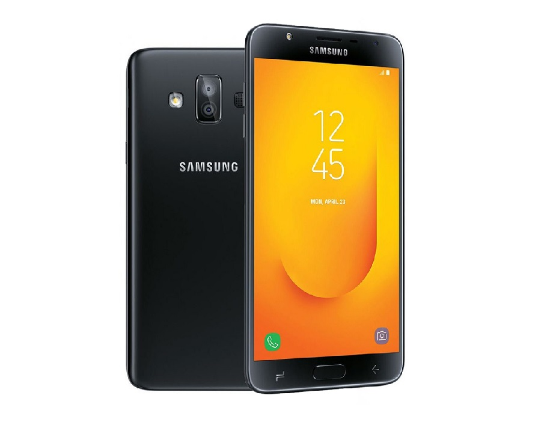

Samsung mobile
Zgodnie z serią Samsung Galaxy J, południowokoreańska grupa Samsung Electronics sprzedaje gamę smartfonów, które są przystępne cenowo dzięki prostym funkcjom.
Oparty na Samsung Galaxy J, który został zaprezentowany w grudniu 2013 r., Wszystkie modele z tej serii mają podstawowe cechy smartfona i różnią się rozmiarem i wyposażeniem. Litera J oznacza Joy (ang. radość). Jednak nowe funkcje są pomijane lub wykorzystywane są inne materiały, a firma Samsung kieruje reklamy na rynki azjatyckie lub europejski rynek pierwotny. Modele są aktualizowane co najmniej raz w roku, niewielkie aktualizacje lub warianty są wyświetlane z dodatkami takimi jak Pro, Duos, Prime itp.
Seria Galaxy J jest corocznie odnawiana telefonami Galaxy J3, Galaxy J5 i Galaxy J7 z dopiskiem roku wydania.

Model z serii Galaxy J